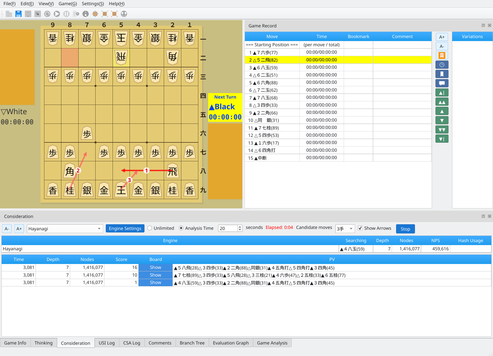

Shogi Playing and Analysis Software Built with Qt6
Screenshots were captured on Linux with the English interface.
The board, game record, and analysis in one window

Main window: the board, move list, and engine analysis in Consideration mode
A wide range of tools for playing and studying shogi
Play human vs. engine, engine vs. engine, or human vs. human games with engines that support the USI protocol.
Learn more →Play over a network through CSA-compatible servers, including floodgate.
Learn more →View moves, time spent, bookmarks, and comments in the game record dock. Explore variations and browse games with navigation buttons.
Learn more →Import and export major game record formats, including KIF, KI2, CSA, USI, SFEN, and JKF. Records with variations are also supported.
Learn more →Analyze game records with a USI engine. An evaluation graph shows how the position changes with each move.
Learn more →Ask an engine to analyze candidate moves from any position, with multiple lines displayed at once.
Learn more →Search for checkmate with an engine and display the mating line when one is found.
Learn more →Generate random candidate positions and use a USI engine to find mates of a specified length. Trim unnecessary pieces to simplify each puzzle.
Learn more →Arrange pieces freely to create a position, then start a game or analysis from it.
Learn more →Load an SFEN position collection and browse it on a board. Import a selected position into the main window for study and analysis.
Learn more →Load opening books, view moves for the current position, and play, edit, add, or delete book moves.
Learn more →Calculate impasse points and check the conditions for an entering-king declaration. Declare a win under the 24-point or 27-point rule from the Game menu.
Learn more →Export the current board or evaluation graph as an image for a blog or commentary article.
Learn more →Dock, float, or tab panels such as game records, engine information, and evaluation graphs to customize your layout.
Learn more →Access commands quickly with icon buttons in the menu dock. Customize favorites and button sizes to suit your workflow.
Learn more →Choose from five piece styles in the View menu: standard, bold, wood grain, white, and black.
Learn more →Customize the board with recommended palettes that match the pieces, or adjust the background, board, piece stands, and grid lines individually.
Learn more →Switch between Japanese and English through the application's language settings.
Learn more →Runs on Linux, macOS, and Windows. Qt6 lets you build a native application for each OS from the same source code.
Learn more →Build the application from source
# Get the source
git clone https://github.com/hnakada123/ShogiBoardQ.git
cd ShogiBoardQ
# Build
cmake -B build -S .
cmake --build build
# Run
./build/ShogiBoardQShogiBoardQ is free software released under the GNU General Public License v3.0 (GPL-3.0) license.
For the full license text, see the LICENSE file.